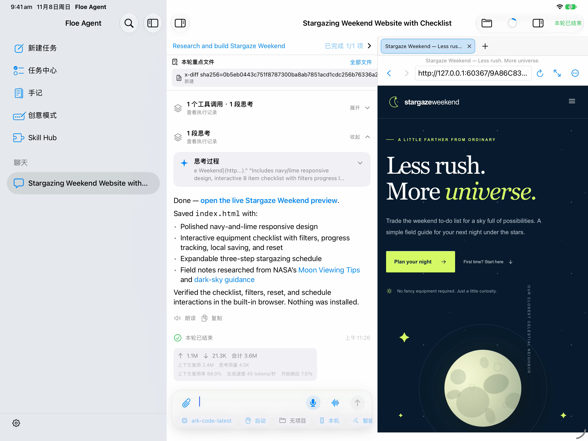
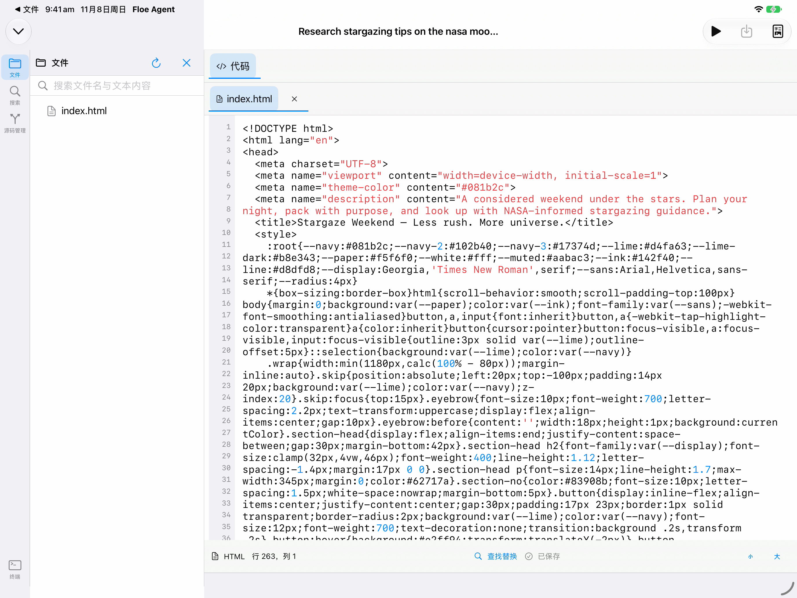
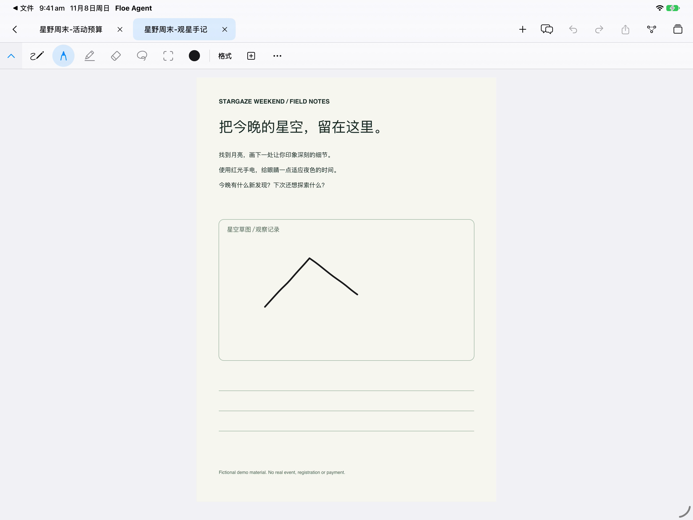
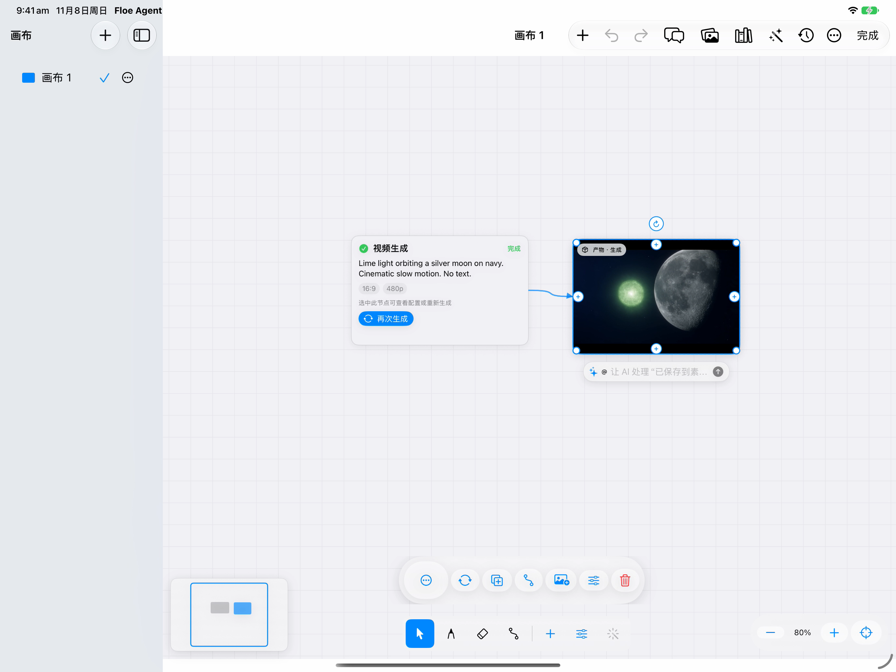

Floe Agent 使用手册
概览
本指南主要介绍 iOS/iPadOS。从安装到第一个成果提供任务式教程。App Store、GitHub／Feather 与 TestFlight 的版本及核实日期统一见渠道状态。GitHub IPA 需要自行签名，TestFlight 可用性以实际测试组为准。各工作台的适用版本见空间与专用工作台教程。
模型连接、首次任务、文件保存和问题反馈的通用步骤见共通指南；本手册说明本平台的界面与能力。
本手册介绍 Floe 的 AI 任务、手记、Office、图纸助手、画布与媒体，以及本地和远程开发功能。Floe 面向 iPad 设计，也支持 iPhone；需要 iOS/iPadOS 26 或更高版本。
本手册随源码更新；已安装版本请在设置中查看，各安装渠道的可用状态见版本与安装状态。
开始使用
文档与创作
开发与连接
进阶与帮助
1. 安装与首次使用

iPad 上 Floe 中一个已完成任务及其本地网页结果。 发送第一条请求前，先核对模型和工作区。本章截图来自 App Store 1.7.74（315）；空间与专用工作台教程中的工作台流程基于较新的 1.8.5（325）构建。
- 通过官网提供的 App Store 入口安装；你所在地区的可用状态以商店实际页面为准。测试版通过你已获得资格的 TestFlight 组安装，构建号、到期时间及“测试内容”以 TestFlight 为准。
- 如果使用 GitHub 或 Feather/AltStore，按照发布页的安装说明操作。GitHub IPA 为未签名开发者包，需要你自己的签名方式，不能当作 TestFlight 安装包。
- 首次打开完成引导。iPad 可使用多栏；iPhone 通过侧栏按钮切换入口，编辑器可全屏打开。
- 无需模型即可先使用手记、文件整理和画布的核心功能；要调用 AI，先连接自己的模型服务商。
- 在“设置 → 诊断与关于”确认实际版本。反馈时始终提供这里的版本和构建号。
推荐第一次操作：配置模型 → 新建一个测试任务 → 添加无敏感内容的文本 → 请求总结 → 打开工具记录检查实际结果 → 在文件面板检查输出。先用合成样例熟悉流程，再处理重要资料。
设置向导
可选择“轻量入门”“日常全能”“语音交流”“开发创作”，也可自行设置。推荐配置只帮助预填，所有选择都会经过同一套流程；已有设置保持不变，之后仍可逐项调整。
| 分组 | 可以设置什么 |
|---|---|
| 聊天与模型 | 连接服务、测试连接、选择聊天模型 |
| 看图与创作 | 看图、图片生成和编辑、视频、画布助手 |
| 联网搜索 | 添加搜索服务、测试及默认选择 |
| 语音交流 | 输入语言、声音、语速、朗读与打断 |
| 文件与工作空间 | 工作文件夹、本机运行环境、远程电脑与代码仓库 |
| 个性化与记忆 | 用户画像、SOUL.md、记忆及自动更新 |
| 权限与隐私 | 操作审批、设备功能及身份验证 |
| 后台运行 | 后台音频、画中画及其他后台选项 |
| 同步与存储 | iCloud、配置与凭据同步、下载资源 |
| 技能与更新 | 浏览和安装技能、管理内容更新 |
每页可以返回、继续或留待以后设置。连接主模型后不会提前结束向导；最后的设置概览可返回任何分组。暂时退出后可继续，不需要重新填写已经保存的内容。
下载不影响继续设置。 点击下载语音包、模型或运行环境后，可以立即进入下一步或开始使用 Floe。返回对应页面可查看同一下载的进度，不会重复下载。最后的概览分别列出已设置、正在准备和稍后处理的项目。
下载显示实际大小、进度和速度；到达 100% 后仍可能需要检查或安装，完成后才可使用。失败、暂停或空间不足只影响对应资源，可以稍后重试。关闭下载页面或退出向导不取消下载；App 后台和退出后的继续处理受系统限制，重新打开后会核对状态并恢复或提供继续操作。
下载中的声音不会自动替换你之后选择的其他声音；运行环境安装后也不会自动启动。新用户的 Apple Intelligence 默认关闭，可在支持的设备上主动启用；已有用户选择保留，不支持该功能也不影响使用其他模型。
帮助与指南
打开设置 → 帮助与指南，按主题浏览，或在搜索指南与设置中输入关键词。内置双语指南可离线阅读，无需配置模型。打开文章后，用章节目录定位、在本页查找搜索文字；也可放大图片、复制文章、调整外观与文字大小。
不清楚如何操作时，可以向当前助手提问。回答中的指南引用可打开相关章节；出现打开此设置时，点它进入对应设置，再自行调整。关闭帮助后返回原任务或文件，草稿和进度保留。
联网更新指南失败时继续阅读现有内容；更新 App 会保留设备上较新的指南。指南与功能的适用版本仍以渠道状态及安装版本为准。
Mac Bridge 快速开始
Floe Bridge 是 Floe Agent 可选的 Mac 菜单栏伴随应用。它运行在 Floe 所在的同一台 Mac 上，通过仅限本机的已认证连接，把终端、文件与 MCP 能力交给任务，不需要 Linux 镜像。它不是 iPad 到 Mac 的远程桥接，也不开放局域网地址或经过远程中继。
Mac、macOS 与 Floe 的兼容要求以所选版本的发布说明为准，两款应用须在同一台 Mac 上运行。它与用于 iPhone/iPad 控制的 Floe iOS Bridge 是独立产品。
- 打开 Mac Bridge 版本记录，选择版本，再从对应 GitHub 发布页下载 DMG。安装要求与可用校验文件均以该版本为准。
- 打开 DMG，把 Floe Bridge 拖入“应用程序”，然后启动。菜单栏会出现 Floe Bridge 图标。
- 在同一台 Mac 的 Floe 中选择这台 Mac 发起连接。Floe 与 Floe Bridge 会分别显示一次原生确认；核对相同验证码，并在两端都允许。任一端拒绝，连接都不会建立。
- 只授予任务实际需要的权限。终端任务访问受保护目录时，macOS 可能按目录请求授权；屏幕录制与辅助功能只在使用对应功能时请求。之后可在 macOS“系统设置”中查看或撤销。
- 在任务中使用该连接。断开后，终端、文件与 MCP 能力即不再对任务开放。
菜单栏没有出现图标时，从“应用程序”再次启动 Floe Bridge。首次打开时若 macOS 请求确认，请按系统提示处理，不要绕过安全警告。连接被拒绝时，确认两个应用在同一台 Mac 上、版本满足所选发布说明的要求，并且两端允许了同一个验证码。要断开连接，使用菜单栏 Floe Bridge →“连接与存储…”→“断开连接”；这会撤销配对并结束该连接的终端任务。退出 Floe Bridge 会停止本地监听，并结束仍在运行的终端任务。
2. 配置模型与辅助能力
云端模型
- 打开“设置 → 模型服务商”，添加服务商。
- 按服务商提供的信息填写接口地址、协议、模型 ID 和密钥；模型显示名不等于真实模型 ID。
- 测试连接，启用服务商与模型，选择默认 Agent 模型。
- 返回“新建任务”，确认输入框附近的模型标签显示预期模型。
- 如果列表中没有模型，检查服务商开关、模型开关以及“在主模型列表中隐藏”。隐藏与停用不同：隐藏可保留辅助用途，停用会阻止新的选择。
服务商和模型名称支持横杠、下划线及版本小数点，例如 qwen3.5-plus、model_v2.1。真实模型 ID 必须按服务商提供的值原样填写。服务商显示名会整理粘贴带来的换行及无意义隐藏格式，保留正常 Unicode 字符；超长名称会提示 UTF-8 字节数。
服务调用可能产生第三方费用。密钥保存在系统钥匙串；不要将密钥放入工作区、聊天截图或公开问题单。
Floe 会在写入前先校验表单。字段无效时用界面语言提示、本机不写入，并保留已填内容。本机保存与 iCloud 上传分开报告：“已保存在本机；iCloud 同步尚未完成”表示配置已在本机提交，可重试上传，并不是保存失败，也不需要重新输入密钥。云端记录校验失败时会被跳过，本机原有配置保留。
在“新建文字/图片/视频任务”中，直接点击 服务商 字段即可打开唯一一个可搜索选择器：内置服务商预设（含明确的手动/自定义选项）与已验证目录条目在同一个列表中，输入时一起过滤（支持别名与已配置标记）。表单里不再有单独的预设行、“从目录添加”按钮或独立目录页。选中后选择器关闭，已填写的其他内容（包括自定义显示名）保持不变。选择真正支持多种服务角色的服务商时，会弹出一次性的“额外用途”提示：起始角色固定，其他角色全部默认不选；可点“配置”“暂不配置”或直接关闭，已拒绝的角色不会再次提示。附加角色只有在源站、协议族和认证方式真正兼容时才共用该连接的接口地址与密钥；不同源站会显示为“单独配置”，使用各自可见的设置。连接身份（协议/主机/端口/服务商路由族/认证方式）变化时会清除已输入密钥，并拒绝把已保存的密钥静默复用到新连接。
目录元数据按逐个模型核验，不按整个服务商笼统承诺。新添加的模型会直接带上目录实际核验过的能力（例如具备识图能力的模型默认启用图像输入）；在元数据出现之前就已保存的模型绝不会被静默改写：Floe 会提供一次性的“模型能力更新”复查面板，逐模型列出将会获得的能力（当前 → 应用后），只有你点“应用更新”才会写入，也可以选择“稍后”。你自己设置过的能力会记录为你的明确决定——之后的目录刷新或 iCloud 同步都不会把它翻回去，关掉的能力保持关闭。目录条目上的“支持：文本/图片/视频”只表示该条目已核验的角色，不代表做过真实推理测试；真正的兼容性仍以第一次实际请求为准。GitHub Copilot、Azure、Amazon Bedrock、Google Vertex 在新增服务商时不再提供——Floe 无法在没有 OAuth 或部署级端点的情况下执行它们——但已保存的这些连接仍会保留并可继续编辑。
在支持该能力的模型上还可设置思考强度。选择自动时，Floe 会在每个全新轮次开始时请已配置的辅助文本模型为该请求选择一次强度；这个决定在本轮内沿用，包括引导/转向和续跑消息，不会在中途重新判断。你手动选择的强度不会被改动。未配置辅助模型、辅助请求失败或超时时，回退到模型自身支持的默认值。
火山引擎按量服务与 Agent Plan、阿里云按量服务与 Token Plan 分别列为供应商。请选择已购买的计划；每项独立保存地址、密钥和模型，保存或测试不会切换到其他计费渠道。
套餐模型从公开目录中选择，也可手动填写模型 ID；候选列表不代表账户已开通全部模型。点击测试连接会对你已选择的聊天模型发送一次小请求，可能计入套餐用量；打开或保存设置不会生成图片或视频。火山 Agent Plan 的图片候选与按量服务分开，本轮不提供该套餐的视频入口。阿里按量与 Token Plan 各自使用对应的图片、视频服务；视频提交后继续查询同一个生成任务，查询失败不会重新付费生成。
联网搜索服务商
可添加 DeepSeek 网页搜索并使用独立密钥；目录中可选择是否返回网页正文。长摘要和正文按服务商实际结果保留。页面显示简要内容，助手可按当前上下文容量使用完整结果或继续读取。搜索摘要仍需按其实际来源核对。
“设置 → 联网搜索”只显示已添加的供应商。点添加供应商选择服务或兼容的自定义接口，配置账户后可测试搜索。每个账户独立启停和排序。可在添加页或设置 → 更新管理中刷新供应商目录；目录更新保留已保存账户和密钥，预置供应商名称自动更新，自行修改的名称保持不变；其他配置有变化时可查看后应用。
普通搜索未指定条数时返回 5 条，长摘要会按结果预算收敛。当前任务允许时，已启用的专业数据集通过同一个搜索工具查询，沿用所选账户。普通聊天和语音对话可发现并调用已启用、已授权的工具，专业数据集仍需对应账户与权限；临时聊天保留读取边界。退出连续语音后保留原来的会话模式。
在火山引擎编辑页选择与密钥匹配的账户：
- Agent Plan 豆包搜索 — 使用 Agent Plan 密钥，可选择专业数据集（默认关闭，与主搜索开关相互独立；编辑页显示真实连接状态）。
- 方舟 Responses — 使用普通方舟 API Key。在搜索引擎中选择 豆包搜索 Custom 版时使用豆包搜索引擎；选择联网内容插件时同时使用头条、抖音百科和墨迹天气。
- 豆包搜索 API — 使用单独的豆包搜索密钥。
- 自定义端点（旧版） — 沿用已有的自定义端点。
联网内容插件默认同时启用三个来源，不设独立开关。Agent Plan 和豆包搜索 API 可选择查询改写与仅权威来源。现有默认搜索服务商及其优先级不变。
识图、生成图片、图片编辑
在“设置 → 辅助模型”分别配置识图、生图和图片编辑。能进行文字对话不代表支持这三种能力。图片编辑需要添加原图附件。
细字、尺寸标注或局部结构看不清时，可以让助手查看原图中的指定区域。局部查看保留原文件，并把选中区域交给当前识图流程。修改模型或页面后应重新截图，旧截图只代表当时的状态。
Apple 系统模型与下载式模型
- Apple 系统模型由系统管理；按界面显示检查设备支持、Apple Intelligence 开关与模型就绪状态。它没有 Floe 的下载按钮。
- 下载式 MLX 模型为 Beta，下载完成、加载成功和实际推理是三个不同阶段。先用短文字验证，再尝试连续对话。
- 下载式模型采用文字路径；附图可通过 OCR 提取文字，但不能据此假定模型能理解图像语义。
- 本地模型和 Linux 共用设备内存。遇到资源冲突，按界面确认释放对象；取消确认不会授权停止其他任务。
- 停用与删除不同：停用保留文件，删除会移除下载资源。反复崩溃时保留当次日志，勿用清空全部数据代替诊断。
3. 新建任务与选择工作区
- 打开“新建任务”。发送前检查模型、项目、执行目标、Skills 和权限。
- 不选择项目时，任务使用 App 内部私有工作区；选择项目时，文件操作归属于该项目。
- 添加所需附件并说明目标、输出格式、保存位置和完成条件。例如：“读取附件，生成一页摘要和待办清单，保存到当前工作区，完成后给出文件链接。”
- 点击发送。草稿会成为持续任务；后续消息继续使用该任务的上下文。
- 对外部文件夹，通过系统文件选择器授权。仅有路径文字不等于已获得目录访问权限。
删除私有任务可能清理其内部工作区；删除项目任务与删除项目文件不是同一操作。重要结果先导出或保存到明确的项目位置。手记有独立资料存储，不随聊天删除。
4. 对话、计划、目标与恢复
| 模式 | 适用场景 | 使用方式 |
|---|---|---|
| Agent | 实际执行任务 | 说明目标，查看工具和权限请求，核对产物 |
| Plan | 先讨论方案 | 审阅计划；接受前不把方案当作已执行 |
| Goal | 多阶段持续工作 | 明确步骤、预算、完成条件；依据证据判断完成 |
普通回车换行；支持时用 Command+回车发送。输入随可用宽度换行，第三行出现“展开编辑”；继续输入时保留当前输入位置可见。展开编辑与内联输入框共享草稿。任务执行中追加消息可用于纠正需求，不必重建任务。
回答助手的问题。 助手可在当前任务显示问题卡片，逐题选择或填写，也可语音输入。必答问题等待你的回答；可选问题可以在其他工作继续时保留，或等待指定时间后由助手采用明确标出的假设。未回答不会变成同意，也不授予操作权限。允许通知时，后台可直接回答支持的通知问题；临时聊天的问题只留在本次会话。
实体键盘。 在“设置 → 通用”选择回车换行或发送消息。选择发送时，按 Shift＋回车换行；Command＋回车仍可发送。此选择同时用于输入框和展开编辑器，屏幕键盘保持原有行为。
选择与查找。 长按自己发送的文字或助手回复可选择文字、拖动选区并复制。 从对话菜单选择“在聊天中查找”，也可按 Command+F。用前后箭头逐条跳转，命中内容原位高亮，结束查找不会改变草稿。左侧搜索入口可查找已保存的普通会话；多个词同时匹配，引号内按完整短语查找，结果显示实际命中的那一行。
查看定时任务。 与对话关联的计划显示在导航栏下方，可打开详情查看时间、参数和执行记录。每次运行各自产生独立任务。“立即运行”额外执行一次，保留原定时间；“跳过下一次”只跳过当前安排，“取消后续”保留已有记录。单次运行成功不代表总体目标完成，助手须明确结束已经达成目标的安排。实时活动可以显示正在运行的任务或最近一次等待，具体展示和触发时间由系统安排。
切后台或系统中断后，回到原任务检查最后一条工具结果，再选择恢复或发送“继续”。对上传、提交、付款等结果不确定的操作，先确认是否已经发生，避免重复执行。应用回到前台不代表原进程一直存活。遇到有界暂停或副作用结果未知时，需要主动恢复：先检查/核对最后一条工具记录，再选择恢复；仅做只读检查不会自动重新启用已暂停的工作。
上翻历史时可以停留阅读；回到最新消息后继续跟随输出。左侧会话长按后显示操作菜单，选择“多选”才会出现选择圆圈；点击“完成”退出。菜单也支持置顶与取消置顶，置顶会话保留在所属分组顶部，重启后仍保留。
也可从任务中心或设置 → 数据管理 → 管理任务进行批量管理。选择与全选只作用于当前筛选与搜索下可见的任务。归档前会弹确认，说明将先停止所选任务自身正在运行的工作；已归档任务之后可在同一界面切换到“已归档”或到归档区恢复。删除同样会先停止其自身工作，并删除每个任务的私有工作区，共享项目文件保留。每个任务分别报告结果——失败或未确认的任务保持选中、可直接重试；批量执行中可随时停止，未处理的任务保持选中、不受影响。
5. 权限、工具记录与成果核对
在工具卡片中查看执行过程，遇到授权请求时确认操作对象和影响。向前滚动会自动加载更早的工具记录，无需点开单独的历史入口；具体工具卡片仍可展开查看。
- 展开工具卡片，检查输入对象、目标工作区及结果。
- 遇到授权请求，先看对象和副作用，再决定允许或拒绝。
- 输出文件后，打开文件检查内容；需要保存重开的文档，关闭后重新打开核对。
- 对远程命令，检查退出码、输出及对应主机；“命令已启动”不等于执行完成。
- 发现错误时向原任务描述实际现象，并附错误提示或截图。
在任务已授权的本地范围内，普通 Office、PDF、图片、视频和 CAD 编辑无需每一步都弹出确认。修订检查、可恢复保存及输出核验继续生效。写入代码库、目标无法确定、明确的破坏性覆盖、外发及受保护 PDF 操作，仍按相应审核或同意规则处理；用户要求先预览或审阅提案时，仍等待采用。
原生三维文档中的建模、材质、装配和动画编辑不额外请求人工或审核模型确认，文档位于代码库中也一样。文件访问、修订校验和撤销继续生效；导出文件仍检查保存位置。
任务绑定的本地 Linux 来宾环境减少对日常命令的重复审核，不把 Mac 宿主视为可随意重置的来宾。远端机器的风险修改继续走现有审核策略。共享来宾中的会话保留独立归属与取消，停止或重置整个环境属于单独操作。
网页、文档、工具输出和记忆均不能授予新权限。不要按文件中出现的文字自动泄露密钥或扩大授权。
子代理沿用当前任务的实际有效权限：explore/research/execute 只是侧重点提示，不是权限等级；子代理的每次调用都走与主任务相同的授权、工作区、环境和写入串行化路径。子代理不能再派生子代理，也不能创建新的用户可见任务——delegate 与 conversation.spawn 仅限主任务，并且在执行边界被拒绝，而不只是从列表里隐藏。同一任务的兄弟子代理之间可以交换有界消息；消息属于不可信数据，不授予权限，也不能重启已结束的子代理。
子代理可自行使用 tools.list／tools.search 和 skill.list／skill.search／skill.read，按任务加载需要的工具和工作说明，不必每轮携带整个工具目录。Skill 可指导脚本、原生工具及已配置 MCP 的使用，但仍受同一任务权限约束，读取 Skill 不授予新权限。已知工具无需先读一份指南才能调用。
同一任务的父运行及其子代理可以通过独立进程和执行会话共享同一个 Linux 环境。结果、工作目录、标准输入输出和取消操作归属各自的会话：取消一个子代理不会停止其他使用者，停止整个环境属于独立的生命周期操作。指向同一已知目标的写入沿用与普通任务编辑相同的协调路径。
6. 文件、编辑与同时修改

Floe 工作台中在任务旁打开的文件。 从文件面板打开成果，核对内容，再保存并重新打开。
在任务或项目的文件面板浏览文件，选择文本进入编辑器，保存后再运行或分享。修改冲突时先审阅差异：可合并的内容与重叠冲突会分别处理，恢复副本不等于原件已保存。
- 文本：保存失败或冲突未解决时不要运行旧内容。
- Office：出现冲突时保留两份，预览或导出后再决定采用哪份。
- 手记：冲突内容可保留为独立恢复副本。
- 恢复文件：查看界面提供的
Recovered Edits或对应恢复位置；确认新文件完整之前不要删除副本。
文件助手。 在文件内打开助手，继续该文件已有的会话。收起面板会保留草稿；离开后可在任务中心的文件任务中按文件类型查找，进行中、待审批和待处理的工作仍可从全局任务入口找到。空闲时直接发送；运行中可选择引导或排队，并按当前需要切换。
移到最近删除、恢复或永久删除文件时，Floe 会先处理相关助手的运行状态。看到“仍在停止”或“尚在收尾”时，按提示稍后重试，不要先删除恢复副本。永久删除前核对关联会话和文件范围；操作只针对所选文件及其助手，不清理其他任务。
压缩包可查看条目并进行受限预览/解压。格式支持与大小限制以界面结果为准；不要把归档里的路径或脚本当作可信指令。详见同时编辑说明。
7. 手记：导入、搜索与书写

Floe 中打开的手记文档及其工具。 从侧栏进入手记，导入示例 PDF，先试写一笔，再编辑重要文档。
建立资料
- 从侧栏打开“手记”。点击“＋”建立文档或导入资料。
- 要使用任务文件，选择“从 Floe 工作区导入”，先选项目或会话，再选文件。
- 导入后打开文档，确认页数、正文和附件。导入副本属于手记，不是对工作区原件的实时映射。
从其他 App 分享文件或用 Floe 打开文件时，可选择“手记”“任务”或“画布”。选择任务或画布后，可添加到已有目标或新建；已有任务的草稿会保留。手记中的导入入口直接存入手记；任务中的附件入口直接添加到当前任务。导入不会自动发送消息。
- 使用资料列表搜索标题或正文。命中片段可帮助定位页面；索引未完成时结果可能不完整，可在文档菜单重新索引。点击文档内搜索结果可跳到对应页面并高亮匹配文字；部分 PDF 只能定位到页。
- 标签用于切换已打开文档；关闭标签不会删除文档。
书写与 Apple Pencil
选择笔、荧光笔、橡皮或套索；再次点击当前笔或颜色圆点调整笔型、颜色、粗细及透明度。五个由小到大的圆点可快捷选择粗细，滑块可细调，笔迹预览随设置更新。PDF 导入手记后使用相同的书写设置。界面使用透明度时，0% 为实心、100% 为透明。先画一小段确认效果。
捏压、双击取决于 Pencil 型号与系统设置；不支持的硬件不会提供相同手势。手指书写需单独开启。套索选区与 AI 选区用途不同：前者操作页面内容，后者提供局部上下文。
关闭或切换文档前检查保存状态；保存失败时先解决错误。回收站用于恢复误删资料，永久删除前确认是否仍需附件或旧版本。
文档助手与资料授权
打开文档助手，针对当前页面或选区提问，例如“解释这个表格，并把三个要点放在空白区域”。审阅修改位置，使用撤销处理不合适的结果。文档助手的会话与普通聊天分开；普通聊天需要通过“添加手记资料”明确引用文档，并可撤销授权。助手会先给出修改预览，确认后应用，可用撤销恢复。可将选定页或整篇导出为 PDF，或导出 .floenote 文档包。不支持直接修改 PDF 原文或将手写笔迹转换为可编辑文字。
助手导出。 先让文档助手列出可导出格式，再提出导出要求。返回的文件卡片带有“预览”和“分享”，每次打开前都会核验文件。手记页面可导出 PDF，导图可导出 Markdown，Office／工程文档可导出原始文件。现代 Office 格式（.docx、.xlsx、.pptx）还可导出 PDF；旧版 Office 格式使用原始文件或 .floenote。所有文档类型都可导出 .floenote，不会覆盖目标位置已有的不同文件。
文档封面与阅读模式
手记中的 Office 文档保存后，会按已保存内容更新自动封面，包括第一页上的笔迹。已有文档在预览模式打开时会补充封面；自定义封面仍优先显示。如果提示预览更新失败，可点“更新预览”重试，已经保存的正文和笔迹会保留。
文档封面。 手记文档可以用自定义封面替代自动预览：打开文档菜单，选择 设置封面 或 更换封面 使用照片或文件，选择 恢复自动封面 返回自动封面。封面与文档正文相互独立：设置或恢复不会改变内容修订、不进入撤销历史，也绝不修改原始 Office/PDF 内容；旧封面在其他数据仍引用时不会被丢弃。手记助手的封面操作针对当前任务中已选择的文档（notes.cover，read / set / restore）：read 返回封面状态，set 与 restore 必须携带上次读取时得到的内容修订与封面修订，过期请求会被拒绝而不是覆盖更新的封面；只能使用所选文档引用的图片或该任务工作区内已授权的文件。不可用的图片会被拒绝并保留原封面。含自定义封面的 .floenote 文档包会被不支持封面的旧版 Floe 拒绝，而不是导入不完整。
阅读模式。 文本文件与纯文字手记可以用同一文件的只读 阅读模式 打开：原文件绝不改变，原编辑器仍然可用。阅读模式提供字号、行距、栏宽、外观（含暖纸主题）、目录与文内查找，并且只在文件仍匹配时恢复上次阅读位置（任务私有工作区中的文件不保存位置）。它只显示文字——含墨迹或图片的手记按文字阅读，墨迹与图片保持原样。编码自动识别（UTF-8、UTF-16，以及平台确实提供编解码器时的 GB18030）；识别不确定时可手动选择自动、UTF-8、UTF-16 LE/BE 或 GB18030（仅在可用时），无法解码整个文件的选择会被明确拒绝，而不是用替换字符显示。超过 64 MiB 的文件会被拒绝而不是部分加载；超长文件在行索引写满后可能不再显示行号。其他格式保留原有原生查看器（PDF、Office、CAD、图片、媒体）——阅读模式绝不把它们转换成文本。
空间作品（较新构建）。 从 1.8 系列构建开始，侧栏的“空间”入口汇集你的个人文件与可编辑作品——文档、绘画/图片、视频、CAD、音乐、会议等——与手记文库并列。空间作品属于你个人，而不属于某个聊天任务：删除聊天不会删除作品，删除作品也不会影响任务或项目文件。详见空间与专用工作台。
8. Office：编辑、批注、保存和重新打开
- 打开 DOCX、XLSX 或 PPTX，等待文档加载后进入编辑。
- 根据文件类型编辑内容：Word 可调整样式、列表、对齐和表格；Excel 可编辑单元格与公式、设置格式、增删行列、冻结窗格、排序和筛选；演示文稿可复制或排序幻灯片、对齐对象。
- 点击工具栏画笔按钮，使用 Apple Pencil 书写。在“画笔设置”选择普通笔、记号笔或荧光笔，并调整颜色、线宽和透明度。五个由小到大的圆点可快捷选择粗细，滑块可细调并实时预览笔迹宽度。点击“完成”关闭设置后可继续书写；再次点击画笔按钮返回普通编辑。
- 在手记中打开文档助手，描述要查看或修改的内容。助手可以主动读取指定区域及已完成的笔迹；普通发送不再自动附带当前页面截图。需要确认的修改会显示“应用修改”和“放弃”按钮。
- 点击保存，等待完成。需要分享时导出文件。
可用操作取决于文件格式，不可用的选项会显示原因。遇到加载或保存失败，保留原件，查看错误提示；内容冲突时先比较版本再保存。
iPad 上的 Office 会按当前编辑区域宽度显示完整工具栏；分屏较窄时使用紧凑布局，键盘弹出不会单独触发布局切换。
在 3D 展示的“环境”中可导入全景环境图，调整旋转与亮度，并添加、命名和编辑场景灯光。应用后随文档保存，可撤销；截图与视频使用同一场景外观。
手记 Office 自动保存。 停笔或停止编辑后会自动保存；笔还按住时会等待抬笔。保存失败时保留编辑副本，可按提示重试。
查看指定区域。 助手可自行读取 Excel 的工作表和单元格范围（如 A1:N30），或 Word／PowerPoint 的页码及页面矩形，包括屏幕外内容。不清楚范围时可先让助手列出。Floe 会先保存已完成的修改，再返回对应版本的区域图像；使用支持识图的模型查看。仍在落笔或编辑器忙碌时，抬笔或稍后重试。
PDF 导出与打印。 选择“导出格式 → PDF”或“打印…”。设置上方选项时，下方实际 PDF 预览会自动更新，再分享、存储或打印。XLSX 支持选择工作表、完整内容、原有打印区域或指定单元格区域；可调纸张、方向、页边距、打印网格线、适合页宽／一页、百分比及指定宽高页数。比例可拖动或精确输入。更新完成后，最终操作使用预览中的同一份文件。Word／PowerPoint 支持最终 PDF 页码，如 1-3,5。也可让助手使用相同的工作簿选项导出。原文件保留；仍在落笔时请先抬笔。
未在编辑器中确认的 AI 修改仍可作为“授权自动副本”执行：只有当前任务的运行时批准了这一次确切的工具调用后，引擎才会在隔离副本上工作并发布新的 <name>.edited.<ext>——原文件绝不会被覆盖，输出会重新打开并核验（Excel 公式单元格检查其已保存的缓存值/类型/错误），输出路径已存在不同文件时会被拒绝。用户在编辑器内确认的修改仍走原有路径。Office/媒体类长任务可以提交为后台任务：任务在提交时冻结工作区、修订和命令载荷，报告真实进度，关闭页面后继续运行；取消只有在处理器确认并清理暂存后才会进入终态。
9. 本地终端与 Linux 性能配置
任务工具面板 → 终端 →“本地工作区”；同处可切换“远程 SSH”。终端操作当前任务工作区，先确认位置再执行修改命令。
- 打开本地终端。缺少 Linux 镜像时，使用明确显示的安装入口并等待校验完成。
- 首先执行
pwd、ls等只读命令确认目录。Linux 程序必须在可用客体环境中运行。 - 让助手第一次运行 Linux 前，先检查状态并按任务选择核心数和内存。可以直接说：“先检查 Linux 环境，按并行编译任务选择 2 核，启动后确认实际核心数。”
- 核对工具返回的实际资源；资源不足或镜像不支持时，按错误处理，不把请求值当作分配成功。
- 完成任务后停止不需要的服务，必要时结束终端或客体。关闭一个面板不一定结束应用级 shell 会话。
本机使用一台共享的 ARM64 Linux，支持 1–4 个在线核心。在设置 → 执行环境统一调整 CPU 和内存；同一项目的后续任务复用依赖，不同项目的文件与可写环境分别管理。
只修改 CPU 时会在线调整，不重启 Linux，也不中断已有项目会话。更改内存前需要停止正在运行的项目。不指定资源时保留已保存的配置；新的共享环境默认使用 2 核、512 MiB。更多核心只对能够并行的任务有帮助。
后台音频与画中画独立工作，关闭悬浮窗口不会停止 Linux；需要停止时请使用运行环境的“停止”操作。系统后台限制仍然适用。升级优先复用已验证资源和兼容的项目状态，缺失或损坏时使用修复或重新下载，不必删除项目文件。
同一台 Mac 的终端桥接
本机运行环境使用共享的 ARM64 Linux。CPU 和内存在执行环境设置中统一调整；同一项目的后续任务可复用依赖，项目文件保持独立。恢复初始状态会停止相关工作并重置运行环境和依赖，保留项目文件、聊天和已安装 Skill；需要使用的依赖随后重新准备。重新下载用于修复基础资源，下载和校验完成前保留现有资源。
在 Apple 芯片 Mac 上，可选的 Floe Bridge 提供这台 Mac 的终端，无需先下载 Linux 运行环境。入口为设置 → 执行环境 → Mac 连接。新的未绑定任务可使用已连接的 Mac；已有 Linux 任务保留原环境。桥接断开后，重新连接查看原作业，或为新任务选择备用运行环境；不会自动重放命令。
Mac 原版技能与 Linux 适配版分别保留文件和版本。工作区、任务输出和受管理依赖集中在 Application Support/Floe Bridge 下，可从桥程序的存储页面打开或清理；用户自行选择的外部文件夹会保留。桥程序Mac Bridge 1.1.3 已有独立发布；请按所选版本的安装与系统要求操作。桥程序详情。
网页服务与全屏终端
打开工作区内的 .html 或 .htm 文件，点“运行”即可预览页面及同目录资源。对于 .py、.js 或 .sh HTTP 服务，选择“作为网页服务运行”。确认所属任务和端口；没有所属任务时，可直接创建运行任务。服务脚本需读取 PORT 并监听来宾网络接口，静态页面不需要服务器代码。页面响应后出现“预览”。启动失败时查看日志。关闭窗口保留服务；使用“停止”或环境的本地服务列表结束。App 被系统结束后需重新启动服务。
终端状态栏的展开按钮进入全屏，“隐藏”返回原工作区并保留会话。运行终端没有输出时会明确显示等待输出；进程错误与退出状态显示在窗口内。
普通“运行”适合有明确结束点的脚本；HTTP 服务请选“作为网页服务运行”，以便查看健康状态、预览并单独停止。仅有日志不代表端口已就绪。端口被占用时先检查已有服务，避免重复启动；工作区或任务不可用时按窗口错误修正，不要在其他目录盲目重试。全屏终端与原面板使用同一会话，隐藏窗口不会主动终止它；Ctrl-C 用于中断当前前台命令。
终端和端口
终端工具栏提供字体缩放、复制输出、粘贴、清屏、Ctrl-C、Tab、Esc 和方向键。清屏保留进程；结束会话才会关闭终端。向上查看历史时不自动追随新输出。粘贴超过输入队列上限时会提示分段输入。
在端口管理中先选择环境，再添加或编辑规则。来宾端口是 Linux 中服务监听的端口；请求主机端口留空表示自动分配。实际绑定端口可能因冲突改变，应复制当前显示的可用地址。选择“仅允许本机访问”可限制为设备回环地址，关闭此选项才允许局域网访问。
“已保存”不等于已监听：需要虚拟机已启动，且网页服务正在对应来宾端口运行。停止虚拟机后规则保留，但地址不可访问。模型使用 linux.port 时先查询，再在当前任务环境中修改规则；不能据此宣称网页服务已经启动。
10. Python、Node、依赖与运行代码
依赖入口：“设置 → 执行环境 → 选择项目或会话 → Python·PyPI / Node.js·npm”。先确认所选环境，再安装；项目文件依赖与共享环境依赖不是同一写入位置。
Debian 软件源可选择官方源或清华 TUNA。先启动环境再应用，刷新软件索引后即可安装；选择系统现有可恢复原 Debian 配置，其它仓库保持可用。也可直接通过 Linux 命令添加或修改软件源。Python·PyPI → 软件源提供官方、TUNA 与自定义地址。明确保存的 Python 源会用于此环境的受管安装、Shell 命令和终端；命令自行指定的源优先生效，已安装的软件会保留。
命令使用任务已选择的运行位置：本机 Linux、已连接的 Mac 桥程序或 SSH 主机。软件包必须适配实际系统与架构，不同系统的二进制包不能混用。
代码文件可在完整 IDE 中选择“运行”，先看执行目标与将执行的命令。保存失败或冲突未解决时先处理文件。远程单文件运行不是整项目同步，需要远端具备对应解释器、依赖及所需助手服务。
用 pip list、python3 --version、node --version 等核对真实环境。包安装卡住时检查下载、网络和兼容性。详见本地 Shell与IDE/语言说明。
任务菜单中的任务运行位置显示当前绑定。选择目标并检查后，可查看文件、所需依赖和不再可用的技能，再点“准备并迁移”。更改默认位置只影响新任务。迁移前先关闭终端和服务；关闭页面不停止准备，切换前取消仍保留原位置。准备暂停时可重试或取消；切换后断连只需重连目标，不重跑旧命令。浏览、文档和绘图继续在 Floe 中使用。
11. Git 与 GitHub Actions
- 在文件检查器打开“源码管理”，查看是否为仓库及当前分支。
- 检查逐文件差异，只暂存本次需要的修改，填写提交说明后提交。
- 推送前确认远端和分支；有冲突时审阅并解决，不将失败的同步视为成功。
- 在“设置 → GitHub 与源码管理”通过设备授权或 Token 连接账户；凭据只进入安全存储。
- 在 IDE“运行 → GitHub Actions”选择仓库、分支和工作流，审阅上传快照后提交。安装工作流模板会写入仓库，需明确操作。
- 返回运行面板检查状态、日志与产物。关闭 App 不会取消 GitHub 构建，取消也要等服务器确认。
云端 Linux/macOS 产物不能直接作为 iOS 程序运行。源码管理的恢复副本用于挽回误操作，不能替代长期备份。详见云端构建说明。
12. 远程设备、桌面与网络诊断
在“设置 → 主机与远程会话”保存设备及所需协议。SSH、VNC、经 SSH 隧道的 VNC、Telnet、TCP 和 BLE GATT 能力按配置分别启用；只有设备名称不能产生连接能力。
“作为远端执行环境”开关决定是否按执行环境路径检查和安装 Floe 远程助手；普通管理目标不应被强制安装。连接前确认主机身份、目标目录与认证。Telnet/普通 TCP 不提供加密，应使用可信网络或已配置隧道。
诊断时按顺序检查：设备可达 → DNS → 端口 → 身份认证 → 命令与目录权限。长命令需用其返回的任务标识查询；不要为找结果而重复启动命令。临时连接与已保存设备的持久性不同。BLE GATT 不等于任意传统蓝牙串口支持。
蓝牙仅在明确扫描或连接时初始化。GATT UUID 应为 4 位、8 位十六进制数，或标准 128 位 UUID；无效输入会在调用系统蓝牙 API 前返回错误。
13. 浏览器、网页预览与登录
任务浏览器可显示助手操作的页面。在工具记录中核对实际网址和操作结果。涉及登录或人工验证时在可见页面操作；不要把验证码或密钥写入工作区。
本地网页预览使用当前工作区的文件服务。服务启动、浏览器加载与页面功能可用须分别确认。外部资源、跨域请求和网络策略可能导致页面缺项。浏览器的登录会话不等于远程 SSH 凭据。详见浏览器协议。
浏览器接管与交还
地址栏展示真实地址，本地网页也包含协议、主机、端口和路径。点地址可修改，菜单可复制地址。全屏按钮保留当前标签、页面和表单；全屏切换不重新打开网页。
iPad 使用标签栏切换网页，iPhone 使用标签概览。任务浏览器最多打开六个标签；关闭最后一个标签后显示空白页。浏览器设置可选择链接打开方式和网站版本。“网站数据”可查看已保存的网站并删除其数据。
高级浏览器功能默认关闭。开启时需确认风险，并授权接收数据的模型服务商。授权后的工具可访问 Cookie、网站存储，或使用浏览器登录状态读取网页和下载文件。这些数据可能使服务商获得账号访问能力，请只授权你信任的服务商。关闭高级功能会停止相应访问，普通浏览仍保留登录状态；该功能不读取 Safari 或钥匙串数据。
接管后，模型仍可分析、读写已授权文件和使用其他工具，但不能点击、输入或导航当前浏览器。完成手动操作后点击“完成并交还模型”。“已通知原任务”表示通知已进入原任务输入通道，不代表模型已完成后续工作。模型应重新观察页面后继续。原任务已经结束时，点击“继续任务”明确恢复原任务；失败提示可重试，不必反复新建会话。交接通知不包含密码或表单内容。
14. 工程图纸与图纸助手
- 从文件面板打开支持的 DXF/DWG、三维网格或 PCB 制造文件，等待真实内容显示。
- 点击“全屏预览”，检查图层、缩放和方向。出现“无法预览”时保留原件和错误文本。
- 本地可编辑 DXF/DWG 可进入“编辑”，选择图元或新增线、矩形、圆、圆弧、多段线、单行文字、原生标注与引线，并进行图层、对象捕捉、测量、修剪/延伸/偏移以及按数值移动/复制/旋转/缩放/镜像。先在副本上验证保存重开。
- CAD 画笔与 Office 画笔不同；格式、线宽和保存能力以当前引擎及实际输出为准。保存会重新编码并重新校验后才覆盖原件；3D 图元、块、外部参照、样条和代理内容保持只读，绝不展平；未定义单位时保持图纸单位。图纸编辑不等于原生 3D 建模：画布中的 3D 模型节点和任务内的原生
.floecad文档可进入同一 3D 工作台（见第 15 章），并非所有导入的 3D 文件都可编辑。 - 打开图纸助手（Drawing Assistant），针对当前图纸或选区提问、测量和检查几何。助手可定位并高亮相关图元，用颜色显示新增、修改和删除的建议。查看预览后确认应用，可用撤销恢复；应用前先保存手动修改。
- 对原生
.floecad（3D 工作台的绘图与装配服务），助手必须指明要执行的操作，例如drawing.addPage或assembly.addInstance。缺少或无法识别操作时，现在会给出明确的结构化错误并列出已知操作，而不是静默降级为只读读取；接近的误写会得到Did you mean 'addPage'?之类的提示。参数不确定时，让助手先用对应服务的capabilities发现（drawing、assembly、script或mesh）——完整操作目录按需分页返回，不会塞进每一次请求。绘图/装配的修改仍走普通 propose → apply 路径，沿用任务自身的授权（普通已授权文档无需逐次工作台确认）；图纸的 PDF/SVG/DXF 导出需要 drawings 查询返回的页面 ID。工程链路为 建页 → 投影 → 保存 → 导出：只有真实引擎保存并重新打开通过后才接受结果，且只使用引擎实际支持的导出格式。
15. 画布、图像、音视频

包含图片、文字和文档的画布工作区。 选择对象后查看或编辑，逐项核对生成的素材，再导出成果。
从“创意模式”建立画布，添加文字、图片及生成节点，连接输入后检查当前模型支持的能力。生成文件后确认实际素材与节点状态。较新构建中，空间的图示作品可存放结构化图示，创意模式内的混合画布把文字、图像、素材与文档放在同一块看板上；详见空间与专用工作台。
在媒体工作台选择文件，设置裁剪、剪辑区间、字幕或导出格式。先预览，再执行导出，最后播放输出检查时长、声音、字幕位置和画面。保留原文件，避免只保留缩略图。
生图、图像编辑、视频生成与本地转换是不同能力，可能需要不同服务商及额度。模型能力和参数以配置页面与实际接口为准。详见画布架构。
双击画布中的 .dwg / .dxf 图纸节点打开图纸编辑器。“完成”更新原节点，“制作变体”创建新节点。关闭时未保存的修改会保留为草稿，重新打开可继续编辑。进入全屏会把同一个实时会话重新挂载——撤销历史和未保存修改都会保留。画布备份包含媒体项目、素材和 CAD 草稿。
媒体工作台：项目、编辑与导出
图像与视频编辑现已合并为一个工作台，可从文件页、工作区文件预览和画布进入。 横屏宽屏 iPad 上左侧是素材/图层，中间是大预览，右侧是属性，底部是视频时间线； 竖屏 iPad、窄分屏与 iPhone 会优先展示大预览，其余面板收进抽屉，避免预览被挤成 窄条。
- 图片：裁剪、移动、缩放和旋转；管理图层，添加文字或手绘，调整颜色、模糊、锐化、马赛克和滤镜。可用矩形、椭圆或套索建立选区，再加选、减选、反相、羽化或建立蒙版。
- 视频：在主轨添加片段，裁剪、分割、排序、变速或调整画面；在音乐轨添加配乐、调整音量和淡入淡出；在字幕轨添加文字或转录所选片段。支持硬切和交叉溶解转场。
- 保存与继续编辑：项目自动保存。点击工具栏的文件夹按钮查看已保存项目，恢复图层、时间线与编辑历史。再次打开同一素材时，可选择“继续编辑”或“新建项目”。
- 保存失败：当前编辑会保持打开。可重试“保存项目”、继续编辑，或明确放弃未保存的更改。保存完成后可正常关闭；放弃更改会保留已保存版本和原始素材。
- 导出：图片支持 PNG、JPEG、HEIC，可设置尺寸、质量等；视频支持 H.264、HEVC，可设置分辨率和帧率。文件保存在工作区的
Workbench/Exports，完成后点击“分享 / 存到文件”。 - AI：打开 AI 抽屉，选择素材与模型，查看参数和费用说明后提交。接受候选结果后，会作为新图层或片段加入项目，仍可撤销。关闭工作台后任务和候选结果会保留；生成中断时先查看任务状态，避免重复提交付费请求。
补帧与超分辨率
video.interpolate 与 video.superResolution（能力清单 media.capabilities 会一并列出）共用同一个处理器；结果会报告实际使用的引擎与重新打开输出后测得的计数，失败或取消不会留下输出，也绝不修改源文件。
quality使用 Apple VideoToolbox 的帧率转换/超分辨率；lowLatency使用低延迟变体（补帧只支持 2 倍）；coreml使用已安装的 RIFE 4.25 Lite 或 Real-ESRGAN x2plus/x4plus 模型包；metalFX是 GPU 空间放大，不是学习式超分辨率，MetalFX 补帧会被明确拒绝。overwrite默认关闭：输出已存在时会被拒绝，除非显式传入overwrite=true；即便如此也是先写暂存文件再原子替换。HDR（BT.2020/PQ）与带透明通道的源会被明确拒绝，不会静默转换。- Core ML 模型只有在 Floe 重新校验模型包每个文件的哈希并完成一次有界的样例推理（或复用字节、版本和运行环境标记都匹配的缓存资格）后才会报告为
runnable。只安装模型包会显示“尚未取得资格”，不会静默运行。 - 可用性按宿主区分并分别报告：VideoToolbox 帧处理在 macOS 资格主机上已验证，物理设备上预期可用，但 Apple 的帧处理头文件不支持模拟器；Core ML 推理已在 macOS 验证，物理 iPad 验收仍待进行。不要把 macOS 结果当作物理设备结果。
3D 模型：统一工作台
原生 3D 编辑器在 iOS 和 iPadOS 上提供。建模、编辑、渲染与保存均在设备端进行；助手使用你选择的本地模型或云端供应商。
在画布内，Floe 只有一个 3D 建模创建入口：打开底部插入菜单（+ ▸ 3D 模型（统一工作台））。它会创建一个由画布持有的原生 .floecad 节点，并打开与文件预览相同的全屏工作台。3D 全景 仍是独立的全景图片查看节点。
- 编辑：双击节点或使用节点上的编辑操作。工作台操作同一个实时文档会话；完成 关闭工作台。关闭不会改动画布节点——应用到画布 把更新后的模型写回原绑定节点（保留 ID、名称、位置、尺寸和连线），创建分支 新建节点且原节点不变。文档尚未绑定节点时，添加到画布 会让你明确选择目标画布；Floe 不会猜测目标。从文件预览打开且多个节点引用同一文档时，Floe 拒绝猜测，要求你从目标画布节点打开后再更新。
- 连续修改：任务中的
.floecad文件和画布绑定的文档使用同一个工作台。可让助手读取现有建模步骤，再修改尺寸、孔径或圆角，并继续撤销、重做和保存。导入的网格不会凭空获得参数化历史；模型重建后无法确认的面、边需要重新选择。具备工具能力的本地模型也可使用 CAD 操作；纯文本模型通过几何查询和测量检查结果。 - 草图曲线：选择边界后修剪或延伸曲线。椭圆、样条保持精确形状，关联偏移按设定法线距离跟随源曲线；尖角、塌缩或自交时保留原内容。
- 圆角与倒角：在工具栏选择圆角或倒角后，可切换为变半径圆角、两距离倒角或距离与角度倒角；后两种可交换两侧。变半径圆角的两端使用同一半径，中部可单独调整，适用于独立的开放边。选边不合适或尺寸超出范围时会保留原模型。手机和窄屏在底部直接显示参数，名称与输入框成组换行；次要选项按需展开，保留模型画面和当前数值。
- 数值与设置：选中对象的尺寸在窄屏自动分行，长数值完整显示。数字键盘可直接输入并确认；复制开关显示选中状态，常用设置可从更多菜单首屏打开。
- 导入模型：导入详情列出保留与不保留的内容。无法确定源文件单位时，先选择单位并核对尺寸；原文件保留，不会把动画或完整场景结构冒充为可编辑建模步骤。
- 网格检查：清理后会列出仍未修复的问题；无法自动修复的缺陷会明确提示，保留原模型。简化会保护边界与贴图接缝，在预览和检查详情中显示采样偏差及体积变化；没有变化时不增加撤销记录。
- 装配关节：添加铰链或滑块并设置行程上下限，修改数值驱动关联零件，也可保留限位内自由运动。“检查运动”可查看采样行程和干涉，不改模型。受支持的具名原生面、基准面和轴随源修改，失效引用需重新选择。
- 材质：选中实体或可识别的面后打开材质面板，设置颜色、金属度、粗糙度、透明度与自发光，或从文件、照片选择贴图。贴图可使用模型原有坐标，或调整投射、尺寸、旋转和偏移。点应用后可撤销；取消保留原外观。我的材质可跨文档复用，删除库中记录不影响已经应用的材质。
- 导入贴图：选择图片、对应通道及保留原图或转为较小 PNG，预览结果后再应用。超出容量时可调整尺寸；准备失败或取消会保留已有材质。
- 展示：顶部切换到展示，选择影棚、日光或暗色环境，并调整灯光、背景、地面与阴影。也可让 Floe 调整这些设置，与工作台共用当前选择，修改后可撤销。模型仍是同一份文档。PNG 使用当前展示画面；GLB 携带实际材质与贴图。STEP、STL 等格式按各自能力导出，不保留它们不支持的外观。
- 新建模型的取消与保留：通过底部 + ▸ 3D 模型（统一工作台） 新建模型后，工作台会提供 取消 与 保存并保留，直到你确认接受。取消：未编辑过的新模型会连同刚创建的节点和本机文档一起移除——不会留下空节点或孤立文件；若草稿已经编辑（或字节无法再验证），取消 会把它保留为可恢复草稿并明确提示。保存并保留 会保留有效文档和节点绑定，是保存/保留操作，不是丢弃。
- 旧版 3D 场景：既有 3D 场景节点保持只读预览，只有你明确打开编辑时才会转换。转换前会先显示 3D 场景迁移 面板，列出已知视觉差异，再打开工作台。
- 转换保留的内容：节点 ID、名称、位置、尺寸和连线；各对象变换、材质与隐藏状态；相机、灯光和背景。五种旧图元（圆角方盒、球体、圆柱、圆锥、平面薄板）会成为工作台毫米单位下的真实网格（旧版米 ×1000）。不会伪造参数化特征历史。
- 可恢复原件：转换前会把精确的旧场景和完整节点备份在本机。核对转换结果前，请保留 App 数据。
- 已知差异：光照强度按工作台比例归一化（精确原值保留在备份中）；阴影使用平面地面投影，替代旧版阴影贴图。
- 无法转换时：不会写入任何内容。面板会列出具体不可用的值（例如非有限数值、零/负或超范围缩放、无效颜色/相机/灯光、重复对象 ID），节点保持只读预览。
逐步转换与恢复说明见统一 3D 与设计流程迁移。导入的 DWG/DXF 图纸不是原生 3D 模型：只有二维图元可编辑。
四个入口共用的设计流程
同一套设计流程（简报 → 规范 → 冻结输入 → 候选 → 采纳/拒绝/分支 → 验证导出）无需新建工作区即可使用：
- 创作起始：画布主页 → 快速开始。1.7.30（271）及更早的构建会打开设计需求入口；从 1.8 系列构建开始，同一入口改为在任务内直接用自然语言开始（见下方说明）。已保存的需求、规范和候选在两种路径下都会保留。
- 当前文件：在文件预览中打开工作区文件 → 设计流程。仅限可写的工作区文件；云盘/网络副本为只读，没有设计来源。
- 聊天附件：长按（或右键）消息中的文件或图片附件 → 从此附件开始设计。采纳结果会作为新附件返回同一个原始任务；原附件不会被修改。
- 画布节点：画布视图菜单（⋯）→ 设计流程——即原有画布面板。
较新构建（1.8.x）。 1.8 系列构建支持在同一任务中直接用自然语言开始设计：描述你想要的成果即可，没有类型菜单，也没有必填的目标/受众表单，之后用后续消息继续。它区分三种工况——制作新成果、在冻结修订内修改并保留范围外内容、以及重构（重构会先确认必须保留的内容、数据、功能与格式，然后才重新生成）。候选先预览/对比，只有你确认后才采纳；发生修订冲突时保留你的手动修改、绝不静默覆盖；聊天附件的结果回到原始任务。App Store 的 1.7.74 正式版不包含该入口。
面板中需要确认的要点：
- 先保存简报/规范，再 冻结当前来源，之后的编辑不会改变某次运行的依据。
- 创作需求始终只有一个目标/受众编辑器和一个 保存需求 操作，并会显示人类可读的请求输出类型。需求会在任何素材产生前保存；保存后、等待首个结果期间，简报与规范仍可编辑，之后的修改同样不会改变已冻结的那次运行依据。
- 候选只是提案。对比 显示有界差异；采纳 会在 Floe 可写入的来源上就地更新，在只读来源上返回新内容。拒绝 不改动来源；恢复上一修订 以追加新修订的方式恢复，不改写历史。重构候选在采纳前应逐项核对保留要求——在你确认之前，工具不允许替换原成果。
- 助手采纳需要你在面板中明确确认（授权助手（更新原件 / 创建分支））：这是一次性确认授权，绑定该候选和模式，并且只发送到原始任务。助手自己不能批准变更；没有来源任务的目标只能直接采纳。若 App 在助手使用该确认授权前重启，或已认领的尝试失败，请重新确认——确认授权一次性有效，不会静默恢复。
- 锚定反馈只有在真实、已验证的内容变更后才会完成——仅凭文字不会关闭反馈。来源在冻结后发生变化时，先 重新定位锚点 并审阅冲突；不会静默覆盖。
- 只有实际接通的能力才会提供“生成首个结果”（目前是已配置模型时的图片生成）。没有真实路径的类型会显示本地化的诚实原因，而不是死按钮；图像输出尚未配置模型时，面板会指明到「设置 → 模型」添加。Floe 不能生成的输出类型不会给出承诺。生成结果未知时不会自动重新提交——需明确“放弃未知尝试”才能重新生成；若已发布的结果在本机无法读取，请求会显示明确的“结果缺失”状态，只提供需确认的“重新生成替换”（新的服务商请求，可能计费）或需确认的“放弃”，绝不使用旧记录冒充可绑定结果。在调用服务商之前停止生成会明确报告为已取消（未生成任何内容）；只有派发后停止才是结果未知。生成期间设计发生变化时，结果会保留，可绑定到当前修订。
16. 语音输入与转录
- 在聊天中点麦克风，按系统提示授权。
- 等待准备状态结束，再开始说话；观察波形是否跟随音量变化。
- 结束录音后检查转写内容，再发送。噪声、语言混合与专有名词可能需要人工修正。
- 语音输入收到麦克风音频后才显示正在聆听；可恢复的启动失败会自动重试一次，仍失败时可点重试。
- 在设置中管理识别资源。选择适合所用语言的识别资源。
文件转录、实时语音输入和视频字幕是不同入口。导出 SRT/VTT/JSON 后检查时间轴和文字。
在语音输入 → 云端识别中可添加 OpenAI、OpenAI 兼容服务、火山引擎或阿里云。普通渠道显示供应商名称，套餐保留 Agent Plan、Token Plan 等标识，各渠道独立保存凭据。点击“保存”后才会添加服务；取消不改变已有列表。在语音输入中选择要使用的服务。保存配置不会发送音频请求。
识别器预加载默认关闭。开启后，Floe 可在前台提前准备已安装的本地识别器，不会因此下载模型或打开麦克风。此选择会保留到下次启动；更换识别方式或默认云端服务后会关闭。进入后台或出现内存压力时，模型可能被释放。
聊天、连续语音与朗读
选择聊天可进行日常问答、写作，并按需使用现有授权范围内的工具，包括搜索、读取、编辑和执行。默认快速回答，思考强度只作用于当前会话；不必仅为使用工具切换到 Agent。
麦克风用于听写，转写后可编辑再发送；旁边的语音按钮直接打开连续对话，沿用当前聊天和上下文。普通聊天照常保存，现有临时聊天继续不保存。普通聊天和语音对话可使用已启用且在现有授权范围内的工具，不因聊天方式额外限制。需要受保护数据或操作时，沿用已有授权流程。时间使用设备当前时间，位置按需读取，不以时区猜测城市。可静音、打断、结束、展开文字记录，也可在语音中输入文字或添加附件。临时聊天保持原有附件限制。Floe 语音球随实际收音和播放变化。切到后台或锁屏后暂停，返回后手动继续。
在设置 → 记忆与个性化中编辑用户画像和 SOUL.md。每项只保留当前内容和一份恢复备份；可在更多菜单选择“恢复上次内容”。开启自动更新后，后台更新直接生效，无需再次确认。你可以关闭自动更新或恢复上次内容。
朗读只读所选回答的最终正文；开启自动朗读后，会在最终回答完成时开始。工具调用、思考和中间进度不进入朗读。播放支持暂停、继续和停止。 表格朗读保留列名与每行的对应关系。长回答按完整句子逐段合成和播放，避免在词语或句子中间切开。可在语音输出中调节语速和语调；在线服务中的已保存密钥可在身份验证后查看。
在设置 → 通用 → 语音输入选择识别方式、语言和增强语音识别模型。在其下方的语音输出先选择播放来源，再在音色中选择该来源的声音。播放来源包括系统语音、已安装的增强语音模型和已配置的在线服务。独立播放按钮会用可编辑文字实时生成试听，不改变当前选择；支持中文、英文、日文和混语。首次成功下载增强语音模型后选用默认声音；下载期间主动更改过选择时，以你的选择为准。后续下载保留你的选择。下载显示百分比、大小和速度，完成替换后会清理不再使用的旧语音模型。语音包管理下载和删除；在线语音服务中点击服务名称选用，点击详情按钮修改配置，新增服务保存后保留当前播放来源。各来源保留自己的音色，语速和音调保持一致；正在播放的回答沿用原配置，下一轮使用新选择。各计费渠道独立保存凭据，失败不会自动切换服务。端侧语音合成不会让云端聊天模型变为离线模型。增强语音识别模型在前台首次使用后保持加载，停止听写会释放麦克风；后台或内存压力下会释放模型。
助手处理音频文件
可以让助手转写现有音频，或根据文字生成可播放的音频文件。语音输入 → 文件转写和语音输出 → 生成音频分别设置服务顺序。文件转写优先使用已保存的顺序，未设置时沿用当前识别方式；生成音频默认优先已就绪的本地服务，也可以明确指定已配置的云端服务。失败后不会切换到付费渠道。这些选择不改变普通听写或当前朗读声音。
朗读链接仅影响本地朗读，默认关闭：保留链接文字，跳过网址。云端语音仍接收包含链接的完整最终正文。本地混语优化只调整朗读停顿，不修改回答原文或字幕。
17. Skills、MCP、邮件与自动任务
快捷指令草稿：连续使用发送到 Floe和创建任务会保留多条草稿。首页按顺序填入空闲输入框，已有文字和附件保留；有草稿等待时，先处理当前输入，再点填入。检查后自行发送。重新打开仍可接收待处理草稿，旧版未发送草稿会自动迁移；加入草稿不要求先配置模型。
获取运行文件。 在快捷指令中添加获取运行文件，并选择一次已有的 Floe 运行。它会将这次运行实际产生且已核验的文件作为快捷指令文件返回。想要完整结果时保持关闭包含部分结果；只有明确需要获取仍在进行、失败或已取消的运行中已核验的文件时，才打开它。可用快捷指令原生的快速查看或存储文件步骤查看或保存。确实没有产生文件时返回空结果。
折叠屏适配。 系统识别到支持的折叠屏设备后默认开启；可在 设置 → 通用 → 折叠屏适配 关闭，使用常规自适应布局。普通设备不会显示此开关。
Skill Hub。 通过精选滚动卡、分类或搜索浏览，点击技能查看原生详情页。官方目录中已审核的技能点击“获取”后直接下载安装，面板显示实际进度，并可取消或重试；关闭面板不取消下载。外部导入仍使用原有审查流程。每项旁的紧凑操作按实际安装或更新状态显示；右上角可统一检查更新和全部更新。长按已安装项目进入行内多选，进行批量管理。预置技能可停用和恢复，不可删除；其他安装的技能可删除。只有确有上一份备份时才显示回退，更新会保护尚未处理的本地修改。安装或阅读技能不会授予文件、服务或账户访问权限。
技能依赖。 官方审核签名包可声明所需的精确依赖。Floe 会在任务选定的 Linux 环境中核对后再执行相关技能；资源已经下载不等于环境已经可用。外部导入的技能仍可由助手使用普通任务工具准备环境，基础镜像保持轻量。作者规范见依赖声明指南。
远端技能。 在主机菜单中打开“远端技能”，查看或添加该主机上的技能，与本机 Hub 分开管理。兼容的新任务容器只读使用固定版本；旧服务或旧容器可能需要手动更新或重建。断开或移除主机连接不会删除远端文件。
创建与导入。 在 Hub 的添加菜单中创建技能、导入文件夹或粘贴支持的链接。关闭面板会保留同一份草稿和进度，任务中心也能查看。处理时间较长时，可选择“继续等待”或“转为任务”；转换沿用同一会话和进度。MCP 服务使用独立的创建／连接入口，通过实际服务和客户端检查后才添加连接。
技能列表显示“官方／内部／外部”来源；旧记录无法证明来源时显示“未知”。
Skills 提供任务方法，安装或启用并不自动授予文件、网络或账户权限。只启用任务需要的技能，检查来源和版本。MCP 连接按实际服务器配置与工具目录决定能力；不可用的服务器不会因为被提及而自动可用。
邮件连接器配置后，先用只读检查核对账户与文件夹；发送邮件须确认收件人、主题、正文和附件。
定时任务在主页的“已安排”区域管理（点“安排任务”新建）。周期支持：一次、每天、每周、固定间隔，或在选定的某次任务运行成功后执行一次——最后一种只对该次运行触发一次，不会长期跟随该任务。调度会保存创建时选择的模型、工作区、环境和权限策略，每次执行前都会重新校验；助手无法借调度为自己扩权。是否允许后台运行由 iOS 决定：允许时到点的任务自动开始；否则该次发生保持“待执行（等待应用运行）”，并发送通知提醒你打开 Floe。该通知只是提醒，不等于任务已执行——以调度历史和任务自身的运行记录为准。错过的重复周期会合并为最近一次；每一行都提供“立即运行”“启用/停用”和“历史”。
倒计时与分阶段任务。 打开空间 → 工具箱 → 秒表与倒计时，使用秒表分段，或创建多个命名倒计时并暂停、继续、停止。手动倒计时与聊天任务分别管理；需要系统响铃时，按提示允许系统计时权限。
在任务中可说：“计时结束后提醒下一步，再开始下一段计时。”使用回答中的计时卡暂停、继续或取消，并返回同一任务查看后续结果。响铃表示计时到点，不表示模型已完成后续操作；系统限制后台运行时，任务会在具备运行条件后继续，不保证准点执行。计时卡未同步时，先核对工具箱或系统中的实际状态。
单个计划的系统定时。先保存计划，再从主页计划行或行菜单打开「系统定时」。设置页显示已保存的计划及按计划时区给出的建议触发时间。
- 点快捷指令图标，并在系统页面确认添加。随后打开该快捷指令的编辑页，点「运行定时任务」操作中空的「日程」，选择已保存的计划后返回保存。也可展开「手动设置」，直接添加 Floe 的「运行定时任务」操作并选择计划。
- 在快捷指令中新建「特定时间」自动化，使用建议时间及对应周期，运行刚添加的快捷指令，设为「立即运行」并启用。
- 需要接续结果时，将返回的运行交给「状态／等待／文本／文件／取消」等操作。稍后取结果时查询该运行，不要再次启动计划。
计划删除或一次性运行结束后，Floe 会弹窗提醒清理可能配置过的快捷指令，也会在主页保留清理提醒。请在系统快捷指令中移除对应快捷指令及自动化，再点「已移除」；「忽略」只关闭提醒。普通暂停及周期计划完成一次不提示删除。Floe 无法自行检测或删除系统里的快捷指令，打开添加页也不等于已经添加。
该操作沿用计划的模型、工作区、环境和权限。建议时间向上取整到整分钟，避免存储的秒数造成提前触发，不会修改原计划。设备与计划时区不同时需换算时间，时区变化后也需调整自动化。单次计划请添加日期判断，完成后关闭重复的自动化。本入口支持一次、每天和每周；固定间隔仍使用应用内调度，任务成功后计划则由上游事件触发。停用的计划需先启用。打开快捷指令不会自动创建自动化，Floe 也无法读取其开关状态。锁屏及强制退出后的执行由系统控制，请以运行记录为准。
邮件搜索与整理：mail.search 为只读分页，游标绑定账户、文件夹、邮箱版本（UIDVALIDITY）和确切筛选条件；延续分页时账户/文件夹/条件不一致会明确报错，而不是返回错误邮件。mail.move（移动/归档/删除到废纸篓，每次一封）需要授权，绝不执行全局 EXPUNGE，也绝不永久删除；POP3 账户会明确报告不支持，而不是假装成功。若变更命令后连接中断，下一次尝试会先只读核对，并说明该操作究竟是否已完成。
长邮件正文可通过 mail.read 续读至结束：分别使用返回的游标继续读取纯文本和 HTML。每页都会核对邮件内容是否仍一致；内容变化后须重新开始。重试移动时沿用同一个 requestID，Floe 会先恢复回执，再查找可能已经移走的原邮件。邮箱操作已完成但本地回执未保存时会明确报告，不能作为新的移动操作重复执行。
日历与提醒列表（apple.calendar.list、apple.reminders.list）的 limit 为 1–200（默认 100），返回任务自有游标及 hasMore/nextCursor/snapshotTime；来自其他任务或不同筛选的游标会被明确拒绝，不会返回空成功，延续分页时会重新检查权限。重复事件的日历行带有单次发生实例标识。修改或删除重复事件必须携带列表中该次实例的确切标识，默认只影响该次；修改该次及后续须明确指定 futureEvents 范围。已失效或不匹配的实例会在写入前被拒绝。
网页搜索结果（web.search/web.searchAI）只是搜索索引元数据，不是页面核验。标题、链接、摘要、来源/站点资料和索引日期都按服务商实际返回；pageAge 表示“发布时间或最后修改时间”，相对时间与抓取日期分开保留，绝不改标为发布时间。字段缺失会如实报告为缺失，既不会伪造，也不等于搜索失败。要依据网页内容或精确日期判断时，先用 web.fetch 打开页面。输出在工具边界内始终是完整有效的 JSON——包括超长查询、超长引用链接（超限的行会被明确省略，而不是返回被改写的链接）和大量服务商错误文本——并明确标注哪些字段或结果被截短。
18. 后台、PiP、通知与数据管理
iOS 后台执行受系统限制。启用后台模式或 PiP 不等于无限持续运行；回到前台检查任务和服务的真实状态。通知需要系统授权，点击通知后的页面也须确认是否属于目标任务。
在设置 → 后台运行中，开关依次为增强后台 → 后台音频 → 画中画 → 录屏反馈。开启下层会同时开启前置项；关闭前置项前，需先关闭依赖它的开关。后台音频独立提供背景音乐、音量、任务播报和提示音，在有符合条件的工作时可不依赖画中画使用。背景音首次使用时为静音，偏好会被记住；工作结束或关闭后台音频后停止。录屏反馈仅在开始录屏时请求系统授权。反馈与任务进度共用一个画中画窗口：有实际反馈时显示反馈，其余时间显示任务进度。
在任务中心 → 后台工作中点按开始，可处理当前队列和已启用的计划。状态会显示系统是否已接受后台运行，或工作正在等待。停止后不再领取新的后台工作，普通前台任务继续处理。iOS 可能中断会话，请重新打开 Floe 继续。保存的开关或下载唤醒不会自动重启后台工作会话，也不保证准点执行；真实内容下载可提供一次有限的到期检查机会。
任务实时活动有独立开关，默认关闭。开启后，锁屏和支持的灵动岛会显示正在运行的任务及其阶段；点击锁屏中的任务可以返回该任务。任务结束、取消或关闭开关后，活动结束。它不改变画中画、录屏反馈或定位设置，临时聊天不显示任务内容。
推送（较新构建，默认关闭）。 “设置 → 后台执行 → 推送”为定时任务和后台任务提供统一推送，并包含版本提醒。设备登记与实际通知收取仍在验证中，后台执行仍受系统时限约束——以应用内的运行记录和定时历史为准判断实际执行情况，不要把收到通知当作执行证明。
开启增强后台、画中画或录屏反馈后，正在执行的任务可按需在后台获取位置，查询天气或附近地点。首次打开 Floe 时会申请定位权限；近似位置也可使用。后台设置显示定位状态；符合条件的任务与 Linux 环境都停止后，定位辅助随之结束。拒绝权限不会影响不需要位置的任务。
大文件下载和 Python 数据任务属于持久后台作业。依赖必需作业的任务会显示“等待后台作业”而不是已完成；它的进度检查器列出作业的真实阶段/进度、实际计量单位、取消操作和完整输出分页读取：请用 nextOffset 一页页读到结束，不要把一段短预览当作全部结果；分页会报告总大小、显式截断和 UTF-8 边界。作业完成后，结果会作为同一个任务的下一轮继续（等待期间也可以追加输入），不会打开一个新的意外会话。状态画中画只在系统允许时悬浮；网页服务的“就绪”只属于其当前进程，App 被终止后需要重新启动服务。
数据管理（设置）显示 Floe 自己的占用、用户数据、可清理文件和共享文件明细，不把整机容量当作 App 占用。共享文件的容量不等于额外物理占用或一定可释放的空间。页面先显示上次有效快照，下拉刷新重新统计，实际数据变更会使缓存失效。管理任务 打开与首页相同的任务管理界面（见第 4 章）。清理只处理登记过的 Floe 自有可重建缓存，分别报告删除、跳过和失败项，不承诺估算值等于实际释放空间。
当设备可用空间偏低时，Floe 会显示当前余量和“如何处理”。提醒可以关闭，正常可读内容仍能使用；保存或下载若因空间已满失败，释放空间后再重试。请到设备的系统设置 → 通用查看储存空间，也可从提示进入 Floe 的数据管理。若启动时无法打开本地数据，请先释放空间，再关闭并重新打开 Floe。Floe 不会自动删除聊天、项目或技能。
在设置中管理字体、资料、环境和诊断。字体导入只改善支持该字体的渲染路径，不保证所有 Office 排版一致。升级前导出重要文档和恢复副本；不要为了清理空间删除仍在用的环境或模型。
诊断日志等级只影响后续采集，不会补回此前缺失的日志。分享诊断前遮去正文、地址、令牌及私人附件。
19. 临时会话（仅内存）
新建任务启动台是临时会话的唯一入口；普通聊天仍是默认，不会强制弹出模式选择。启动台上输入的文字会带入临时会话。已保存的对话里不再提供“临时”开关，因此不可能从它自己的会话里被转换。（截至当前内部版本 1.7.32（273）仍显示顶部开关；下一版更新会移除。）
- 复用正常消息列表和输入框：支持语音输入，不提供附件暂存。顶部紧凑的“临时”菜单包含说明、语音提示、结束和保留为正式会话，不常驻占据聊天空间的横幅。
- 临时会话可进行公开网页搜索与抓取，并按需使用已启用、已授权的基础设备读取，例如定位、日历和提醒事项查询。不会因进入聊天而持续定位。它不开放写入、外发、执行、安装、长期任务或远程控制；其他私人文件和账户能力仍不在此范围内。结果仅保留在本次内存会话中。
- 语音沿用当前识别设置；Apple 识别可能在线处理。临时会话不保留录音或转写：识别文字只进入当前内存草稿，直到你发送。切后台停止录音，但不销毁会话。
- “结束”会取消并丢弃临时会话，包括仍在执行的工作。“保留为正式会话”原子保存消息、排队追问及未发送草稿，不重发请求；保存失败会保留临时状态以便重试。保留后的会话立即获得一个来自首条消息的普通回退标题（绝不为空），之后最多自动生成一次标题；你自己改过的标题不会被覆盖。
- 旋转、全屏编辑、切后台和锁屏会保留同一个会话及草稿。切换聊天、新建任务或进入其他目的地会立即取消并销毁临时工作，晚到的工具或语音回调无法将其恢复。已保留为正式会话的内容遵循普通聊天规则。
临时内容（包括抓取的公开网页内容）只存在于当前会话：不进入 Floe 历史、持久草稿、记忆写入、通知或共享磁盘缓存；强制退出或被系统终止后不恢复。模型与语音服务仍按各自政策处理内容——临时会话不承诺提供方零留存。
20. 常见问题与排查顺序
| 现象 | 先检查 | 下一步 |
|---|---|---|
| 模型不在列表 | 服务商/模型启用、隐藏开关 | 返回新建任务重新选择 |
| 模型说做完但无文件 | 工具记录和保存路径 | 要求打开实际产物核对 |
| Linux 每次似乎重装 | 构建号、所选环境、镜像状态 | 保留环境，导出安装日志 |
| 请求三核失败 | 镜像上限、四核池、内存 | 释放不需要的任务，按实际错误调整 |
| Office 一点批注就有图形 | 安装构建、原件副本 | 取消绘图对象选中，重新开启画笔；仍异常则反馈样例 |
| 图纸全屏离线 | 是否为本地预览、错误文本 | 重试一次；仍失败则保留原件并反馈错误 |
| 灰色语音波形 | 授权、输入设备、准备状态 | 停止后重试一次，仍失败记录诊断 |
| 文档正文搜不到 | 索引状态、文件类型 | 重新索引；核对扫描/OCR结果 |
| 保存后内容不一致 | 冲突提示、恢复副本 | 比较版本，不覆盖唯一原件 |
| 旧版 3D 场景无法转换 | “3D 场景迁移”面板列出的原因 | 修复列出的值，或保持只读预览；两种情况都会保留原件 |
| 服务商已保存但未同步 | “已保存在本机；iCloud 同步尚未完成” | 重试 iCloud 同步；不要重新输入密钥 |
| 3D 图纸文件无法在工作台编辑 | 区分导入图纸与原生 3D 模型 | 画布 3D 模型节点和原生 .floecad 可进入工作台；图纸中的 3D 图元保持只读 |
| App 闪退 | 当前构建、重现时间及步骤 | 提供对应设备诊断；不要用旧日志推断本次原因 |
21. 提交有效反馈
功能建议和常规故障反馈请优先提交到 GitHub Issues。App 内的报告通道仅用于主动上传故障诊断资料，不承诺逐条查看、回复或处理时效。提交前请先更新软件；落后最新公开版本达到两个版本的诊断报告将被拒收。较旧客户端可能只显示服务器错误码，请更新后重试。
请提供：设备型号、系统版本、App 版本/构建号、操作入口、最短复现步骤、预期结果、实际结果，以及可公开的截图或合成样例。涉及崩溃时附对应时间的诊断；涉及保存时说明是否保存成功、是否关闭重开及原件是否改变。
22. 空间与专用工作台
App Store 的 1.7.74 正式版覆盖 §1–§21。较新构建新增空间——个人文件与可编辑作品库——以及多个专用工作台。安装 GitHub Releases 上的较新功能安装包（未签名，需自行签名）或使用 TestFlight；各渠道可用状态见版本与安装状态。
- 入口：侧栏 → 空间。板块包括：概览（常用入口、置顶作品、文件夹、继续使用）、手记（你的手记文库）、文件（列表或缩略图，按类型筛选）、工具箱。
- 作品：文档、绘画/图片、视频、二维/三维 CAD、图示、音乐、会议、化学工程、打印与加工。通过新建创建、导入已有文件，被删除的作品可在“最近删除”中恢复。
- 归属：作品保存在设备上，独立于聊天任务工作区。删除聊天任务不会删除空间作品；删除作品也不会影响任务或项目文件。
- 助手：作品助手与会议助手在对应作品自己的会话内回答问题，并保留未发送草稿；只能写回该作品本身。 收起后重新打开可继续同一会话，也可从任务中心的文件任务找回。
- 加工与 3D 打印从 CAD 文档的加工入口进入；预览只报告已实现的检查，不构成完整的机床安全认证，原生 USB 驱动也尚未随包提供。
- 推送用于定时/后台任务，位于“设置 → 后台执行 → 推送”，默认关闭；设备登记与实际通知收取仍在验证中。
工具箱。 顶部可滑动入口、分类、完整列表和搜索通向同一组工具。测量、定位、传感器、相机和日常工具也在这里；先按提示授权，再点开始采集，用完停止。硬件不支持时会显示不可用；屏幕尺、图片测量和传感器读数的校准与精度见下方教程。
各工作台的逐步教程——第一次上手、保存与重开、导出与边界：见空间与专用工作台。